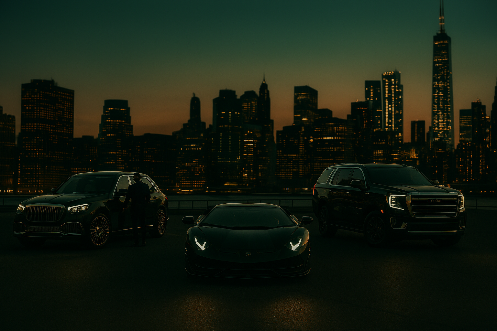

F1DAN Curated Luxury Tours
City Tours
Explore Toronto through the lens of luxury. Our signature city tours include chauffeur-driven black XL SUVs, a dedicated host, and a curated itinerary of iconic landmarks, boutiques, skyline views, and cultural gems. Every moment is styled and elevated for a flawless experience.
Includes: Chauffeur, host, refreshments, customized stops, and cinematic documentation options.
Contact to BookWinery Tours
Embark on a luxurious escape through Ontario’s finest vineyards. Our winery tours offer private, chauffeured travel to prestigious estates, with options for exclusive tastings, gourmet pairings, and tranquil views — all curated with elegance in mind.
Includes: Luxury transport, private reservations, charcuterie, vineyard itinerary planning, and photography add-ons.
Contact to BookTop Places to Eat
Begin with a picturesque café, continue with elegant dining, cocktails with a view, and finish with curated dessert — all in one luxury tour. With a personal chauffeur and itinerary arranged by F1DAN, you experience the city's culinary elite like royalty.
Includes: Chauffeured evening (4–6 hours), suggested itinerary & reservations, host (optional), and photo or video enhancements.
Contact to BookPrivate Tours
Whether it's a high-profile occasion, private romantic experience, or exclusive city discovery, F1DAN’s private tours are fully customizable and exceptionally discreet. Let us handle every detail while you enjoy a world-class journey.
Includes: Any luxury vehicle from our fleet, optional host, floral or gift arrangements, custom routes, and creative media services.
Contact to Book